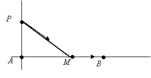

П19.1 №26
Шоссе пересекает местность с запада на восток.
В 9 км к северу от шоссе находится лагерь, а в 15 км к востоку от ближайшей на шоссе к лагерю точки расположен город. Каков должен быть маршрут,
чтобы добраться в город в кратчайший срок, если скорость движения по полю 8
км/час, а по шоссе – 10 км/час?
РЕШЕНИЕ:

Пусть лагерь располагается в точке  , а город в точке
, а город в точке  . –
кратчайший маршрут до шоссе
. –
кратчайший маршрут до шоссе  ,
,  км, км.
Где будет находиться точка
км, км.
Где будет находиться точка  ?
?
, а город в точке . –
кратчайший маршрут до шоссе , км, км.
Где будет находиться точка ?РЕШЕНИЕ:
Обозначим расстояние  через
через  ,
. ,
.
,
. ,
.
через ,
. ,
.Время движения определяется функцией .
Производная обращается
в ноль при , откуда .
Значение  ,
оно является наименьшим по сравнению с
,
оно является наименьшим по сравнению с  и
, так что к шоссе нужно выйти в 12 км от лагеря на восток.
и
, так что к шоссе нужно выйти в 12 км от лагеря на восток.
,
оно является наименьшим по сравнению с и
, так что к шоссе нужно выйти в 12 км от лагеря на восток.